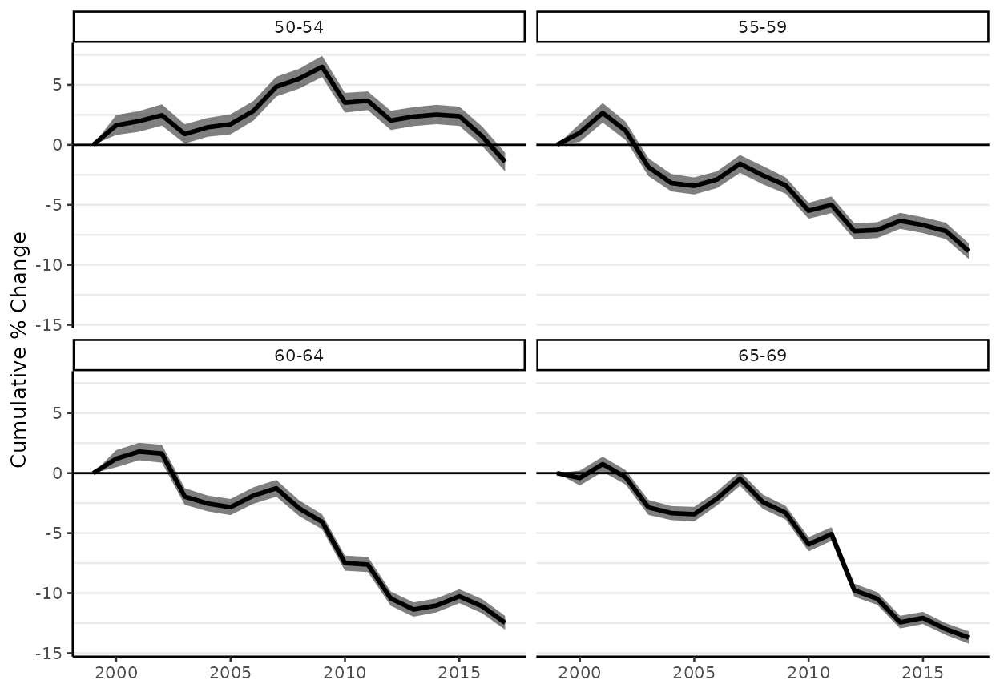
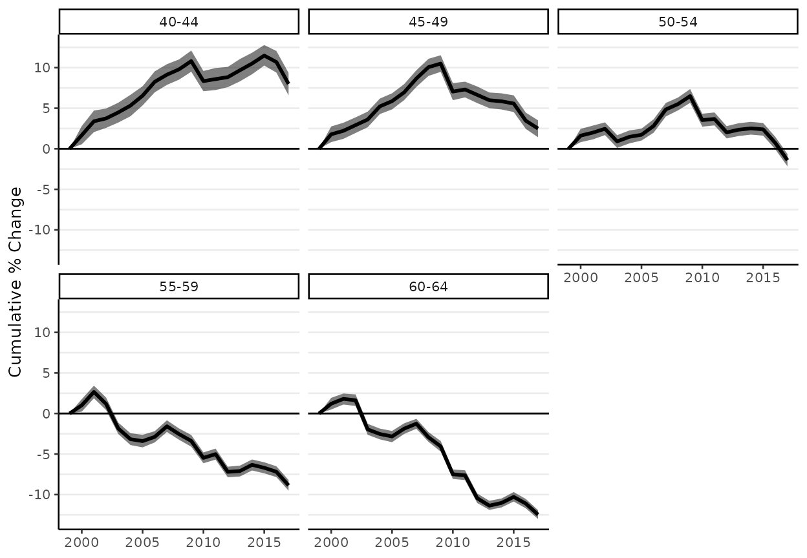
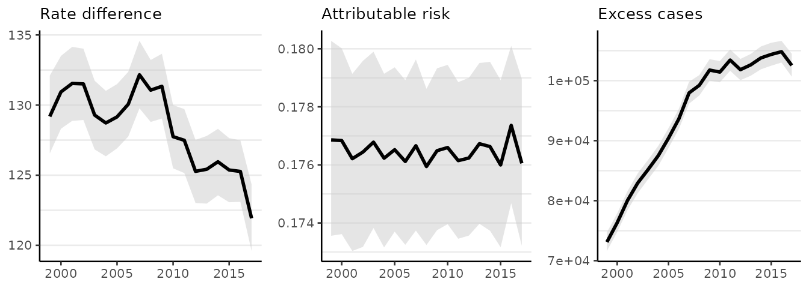

vignettes/age-standardization.Rmd
age-standardization.RmdAge-standardization is used to improve comparison of disease incidence or mortality rates across populations. The term ‘population’ is used to reference any distinct grouping of people, whether it be geographic (e.g., two or more regions), temporal (e.g., two or more years), or social (e.g., two or more genders). Because disease and mortality risk vary strongly by age, we want to control for varying age distributions across groups. Examination of each age-specific rate can be indispensable for an analysis, though age-standardized rates provide a single summary index of risk.
This vignette describes the method of direct age-standardization (Broemeling 2020) and then demonstrates implementation with surveil. The final section extends the methodology to the analysis of health inequality between two groups, where each group is age-stratified (e.g., two racial-ethnic groups in the same region).
The demonstration will use age-specific cancer incidence for the entire population of the United States of America, 1999-2017.
library(surveil)
data(cancer)
head(cancer)
#> Year Age Count Population
#> 1 1999 <1 866 3708753
#> 2 1999 1-4 2959 14991152
#> 3 1999 5-9 2226 20146188
#> 4 1999 10-14 2447 19742631
#> 5 1999 15-19 3875 19585857
#> 6 1999 20-24 5969 18148795We will also use the age distribution of the United States in the year 2000 (2000 U.S. standard million population, see ?standard):
data(standard)
print(standard)
#> age.id age standard_pop
#> 1 1 <1 13818
#> 2 2 1-4 55317
#> 3 3 5-9 72533
#> 4 4 10-14 73032
#> 5 5 15-19 72169
#> 6 6 20-24 66478
#> 7 7 25-29 64529
#> 8 8 30-34 71044
#> 9 9 35-39 80762
#> 10 10 40-44 81851
#> 11 11 45-49 72118
#> 12 12 50-54 62716
#> 13 13 55-59 48454
#> 14 14 60-64 38793
#> 15 15 65-69 34264
#> 16 16 70-74 31773
#> 17 17 75-79 26999
#> 18 18 80-84 17842
#> 19 19 85+ 15508Notice that the five-year age groups in the cancer data match the age groups provided by standard.
In some cases, one is only interested in a subset of age groups. For the following examples, we will limit the analysis to persons 40-64 years old:
cancer <- cancer[grep("40-44|45-49|50-54|55-59|60-64", cancer$Age),]
standard <- standard[10:14,]
head(cancer)
#> Year Age Count Population
#> 10 1999 40-44 49256 21729686
#> 11 1999 45-49 71420 19235534
#> 12 1999 50-54 99571 16557188
#> 13 1999 55-59 121501 12787366
#> 14 1999 60-64 143968 10435791
#> 29 2000 40-44 50907 22047047
print(standard)
#> age.id age standard_pop
#> 10 10 40-44 81851
#> 11 11 45-49 72118
#> 12 12 50-54 62716
#> 13 13 55-59 48454
#> 14 14 60-64 38793If, instead of making this selection, we were to use the entire age distribution in our analysis, all of the following discussion and code could proceed unchanged.
Let \(\theta_i\) be the disease risk in the \(i^{th}\) age group, and let \(\omega_i\) be the standard population count for that age group. Then the age-standardized risk is: \[SR = \frac{\sum_i \theta_i \omega_i}{\sum_i \omega_i}\] That is, age-standardization consists of multiplying actual age-specific risk levels by false, but fixed, population sizes.
There are two steps to producing age-standardized rates using surveil. First, model each age group using stan_rw. Second, convert the age-specific model results into age-standardized rates using the standardize function.
To model age-specific rates, provide the stan_rw function with the cancer data and tell it which column contains the time period indicator (Year) and which column contains the grouping variable (Age):
fit <- stan_rw(cancer,
time = Year,
group = Age,
iter = 1500,
chains = 2 #, for speed only; use default chains=4
)
#> Distribution: normal
#> Distribution: normal
#> [1] "Setting normal prior(s) for eta_1: "
#> location scale
#> -6 5
#> [1] "\nSetting half-normal prior for sigma: "
#> location scale
#> 0 1
#>
#> SAMPLING FOR MODEL 'RW' NOW (CHAIN 1).
#> Chain 1:
#> Chain 1: Gradient evaluation took 3.7e-05 seconds
#> Chain 1: 1000 transitions using 10 leapfrog steps per transition would take 0.37 seconds.
#> Chain 1: Adjust your expectations accordingly!
#> Chain 1:
#> Chain 1:
#> Chain 1: Iteration: 1 / 1500 [ 0%] (Warmup)
#> Chain 1: Iteration: 751 / 1500 [ 50%] (Sampling)
#> Chain 1: Iteration: 1500 / 1500 [100%] (Sampling)
#> Chain 1:
#> Chain 1: Elapsed Time: 1.09461 seconds (Warm-up)
#> Chain 1: 0.451252 seconds (Sampling)
#> Chain 1: 1.54586 seconds (Total)
#> Chain 1:
#>
#> SAMPLING FOR MODEL 'RW' NOW (CHAIN 2).
#> Chain 2:
#> Chain 2: Gradient evaluation took 2.4e-05 seconds
#> Chain 2: 1000 transitions using 10 leapfrog steps per transition would take 0.24 seconds.
#> Chain 2: Adjust your expectations accordingly!
#> Chain 2:
#> Chain 2:
#> Chain 2: Iteration: 1 / 1500 [ 0%] (Warmup)
#> Chain 2: Iteration: 751 / 1500 [ 50%] (Sampling)
#> Chain 2: Iteration: 1500 / 1500 [100%] (Sampling)
#> Chain 2:
#> Chain 2: Elapsed Time: 0.56696 seconds (Warm-up)
#> Chain 2: 0.604462 seconds (Sampling)
#> Chain 2: 1.17142 seconds (Total)
#> Chain 2:The default plot method will return all of the age-specific cancer risk trends on the same plot; with many age groups and dissimilar risk levels, it is easier to understand the results if, instead, we use a grid of multiple small plots (facet = TRUE) and allow the scale of the y-axes to adjust for each age group (facet_scales = "free"):
plot(fit,
facet = TRUE, # plot small multiples
facet_scales = "free", # y-axes vary across plots
base_size = 10, # control text size
size = 0, # removes crude rates from the plots
scale = 100e3 # plot rates per 100,000
)
#> Plotted rates are per 100,000
The lines indicate estimates of risk \(\theta_i\) (the means of the posterior probability distributions for \(\theta_i\)) and the shaded intervals correspond to 95% credible intervals for \(\theta_i\).
In addition to examining trends in age-specific risk (as above), we can also convert each age-specific trend to its annual percent change or cumulative percent change.

The standardize function takes a fitted model, plus the standard population, and returns standardized rates (SRs):
fit_sr <- standardize(fit,
label = standard$age,
standard_pop = standard$standard_pop)As usual, surveil provides a plotting method for the fit_sr object:
# load ggplot2 to enable additional plot customization
library(ggplot2)
plot(fit_sr, scale = 100e3, base_size = 10) +
labs(title = "US age-standardized cancer incidence per 100,000",
subtitle = "Ages 40-64")
#> Plotted rates are per 100,000as well as a printing method:
print(fit_sr)
#> Summary of age-standardized surveil model results
#> Time periods: 19
#> time_label stand_rate .lower .upper
#> 1999 0.00601 0.00600 0.00603
#> 2000 0.00610 0.00608 0.00611
#> 2001 0.00615 0.00613 0.00617
#> 2002 0.00614 0.00612 0.00615
#> 2003 0.00602 0.00600 0.00603
#> 2004 0.00602 0.00600 0.00603
#> 2005 0.00602 0.00601 0.00604
#> 2006 0.00608 0.00607 0.00610
#> 2007 0.00616 0.00614 0.00617
#> 2008 0.00614 0.00612 0.00615
#> 2009 0.00613 0.00611 0.00614
#> 2010 0.00595 0.00594 0.00597
#> 2011 0.00596 0.00595 0.00598
#> 2012 0.00586 0.00584 0.00587
#> 2013 0.00585 0.00583 0.00586
#> 2014 0.00587 0.00586 0.00588
#> 2015 0.00588 0.00587 0.00589
#> 2016 0.00581 0.00580 0.00583
#> 2017 0.00571 0.00570 0.00573To learn about the contents of fit_sr, see ?standardize or explores its contents as you would a list (names(fit_sr), fit_sr$standard_summary, head(fit_sr$standard_samples), etc.).
The group_diff function can be used to obtain measures of inequality between two age-stratified groups. The measures of excess cases (EC) and proprotion attributable risk (PAR) are adjusted to account for age-specific rates with varying sizes of populations at risk.
In the following table, \(D\) and \(A\) refer to the age-standardized rates for the disadvantaged and advantaged populations, respectively. Age groups are indexed by \(i\), such that \(D_i\) is the incidence rate in the \(i^{th}\) age group for the disadvantaged population.
| Concept | Formula for Age Stratified Groups |
|---|---|
| Rate Ratio (RR) | \(\frac{D}{A}\) |
| Rate Difference (RD) | \(D - A\) |
| Excess Cases (EC) | \(\sum_i (D_i - A_i) * P_{d,i}\) |
| Proportion Attributable Risk (PAR) | \(\frac{\sum_i (D_i - A_i) * P_{d,i}}{ \sum_i D_i * P_{d,i} }\) |
The EC measure sums the excess cases across all age groups, and the PAR devides the EC measure by the total risk across all age groups in the disadvantaged population. For age stratified populations, the PAR may be preferred over the RR as a measure of relative inequality because the PAR reflects the actual population sizes.
Pairwise measures of inequality have an important purpose (tracking health inequalities between historically or currently advantaged and disadvantaged groups), but we should keep in mind the limitations inherent in tracking the progress of any group by comparing that group to a moving target (particularly one that may move in an unfavorable direction). There are rarely only two groups of interest; to measure health inequality across multiple groups, consider Theil’s index (see ?theil and vignette("demonstration")).
To demonstrate, we will use the same cancer data and create a fake comparison population. This will allow us to avoid introducing a new data set and it will give us control over the results.
Pretend that instead of having cancer incidence data for the entire USA, we have cancer data for two sub-populations, group A and group B. The original cancer data will serve for A (cancer_a), and we will create cancer_b so that its cancer incidence rate is, in relative terms, steadily above that of cancer_a. Group B will have smaller population than group A, and we will also add some extra ‘noise’ to the data.
cancer_a <- cancer
cancer_b <- cancer
## set the case count equal to 0.75 times that of group A
cancer_b$Count <- round(cancer_a$Count * 0.75) +
rpois(n = nrow(cancer), lambda = cancer_a$Count * 0.1) # adds a little noise to the data
## set the population at risk to 0.6 times that of group A
cancer_b$Population <- round(cancer_a$Population * 0.6) +
rpois(n = nrow(cancer), lambda = cancer_a$Population * 0.1)Now we can model age-specific risk for Group B (cancer_b):
fit_b <- stan_rw(cancer_b, time = Year, group = Age,
refresh = 0, # silences some printing
iter = 1500,
chains = 2 # for speed only; use default chains=4
# cores = 4 # for multi-core processing
)
#> Distribution: normal
#> Distribution: normal
#> Warning: Bulk Effective Samples Size (ESS) is too low, indicating posterior means and medians may be unreliable.
#> Running the chains for more iterations may help. See
#> https://mc-stan.org/misc/warnings.html#bulk-ess
#> [1] "Setting normal prior(s) for eta_1: "
#> location scale
#> -6 5
#> [1] "\nSetting half-normal prior for sigma: "
#> location scale
#> 0 1And then age-standardize the results:
fit_sr_b <- standardize(fit_b,
label = standard$age,
standard_pop = standard$standard_pop)Finally, to obtain measures of the difference in risk between these two groups we place the two age-standardized models into a list (preferably a named list), and then pass the list to the group_diff function (see ?group_diff for more details):
fit_sr_list <- list(B = fit_sr_b, A = fit_sr)
ineq <- group_diff(fit_sr_list)
plot(ineq, base_size = 10)
#> Rate differences (RD) are per 100,000 at risk
We see that relative inequality (AR) is about constant (as expected), the rate difference falls (because the total level of cancer risk has fallen over time), and excess cases increase over time (because the total population at risk is both growing and aging).
print(ineq)
#> Summary of Pairwise Inequality
#> Target group: B
#> Reference group: A
#> Time periods observed: 19
#> Cumulative excess cases (EC): 1,792,688 [1785311, 1800937]
#> Cumulative EC as a fraction of group risk (PAR): 0.18 [0.18, 0.18]
#> time Rate RD PAR RR EC
#> 1999 0.0073 0.0013 0.18 1.2 73013
#> 2000 0.0074 0.0013 0.18 1.2 76008
#> 2001 0.0075 0.0013 0.18 1.2 80173
#> 2002 0.0075 0.0013 0.18 1.2 82956
#> 2003 0.0073 0.0013 0.18 1.2 84982
#> 2004 0.0073 0.0013 0.18 1.2 87451
#> 2005 0.0073 0.0013 0.18 1.2 90635
#> 2006 0.0074 0.0013 0.18 1.2 93932
#> 2007 0.0075 0.0013 0.18 1.2 97756
#> 2008 0.0075 0.0013 0.18 1.2 99559
#> 2009 0.0074 0.0013 0.18 1.2 101853
#> 2010 0.0072 0.0013 0.18 1.2 101541
#> 2011 0.0072 0.0013 0.18 1.2 103591
#> 2012 0.0071 0.0013 0.18 1.2 101801
#> 2013 0.0071 0.0013 0.18 1.2 102573
#> 2014 0.0071 0.0013 0.18 1.2 103435
#> 2015 0.0071 0.0013 0.18 1.2 104489
#> 2016 0.0071 0.0012 0.18 1.2 103839
#> 2017 0.0069 0.0012 0.18 1.2 103101